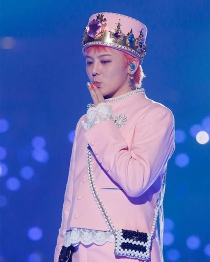
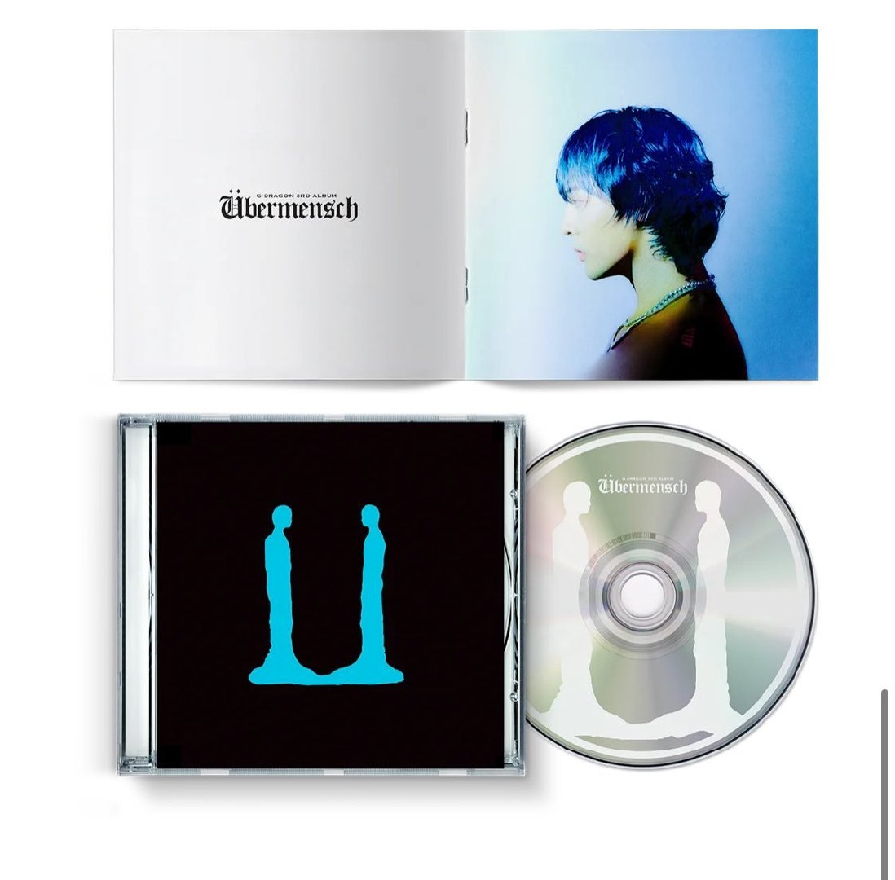
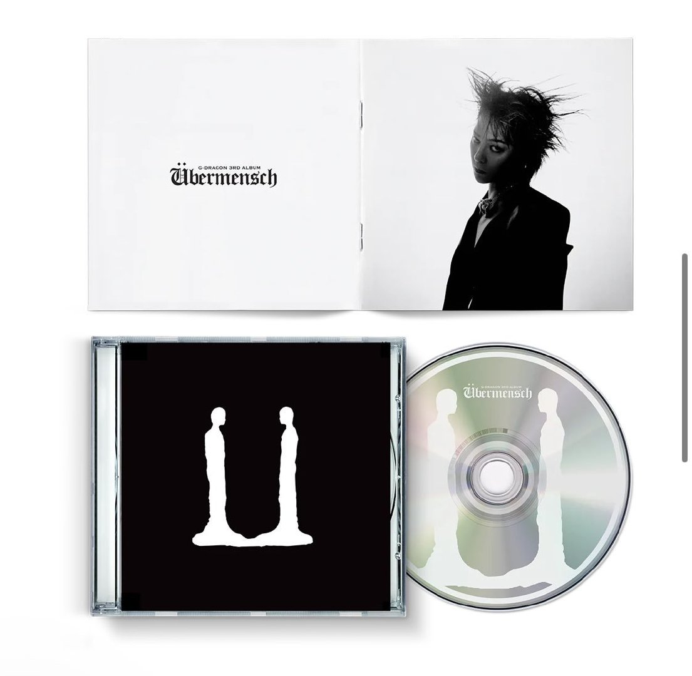
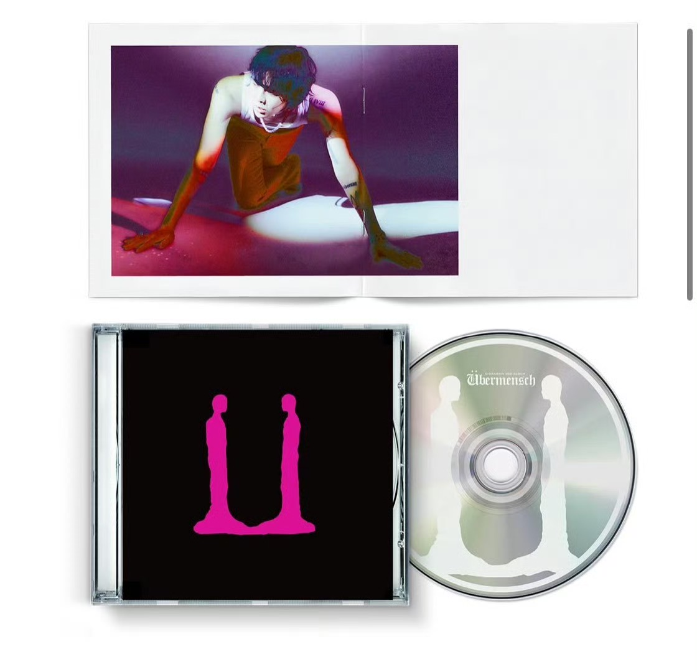
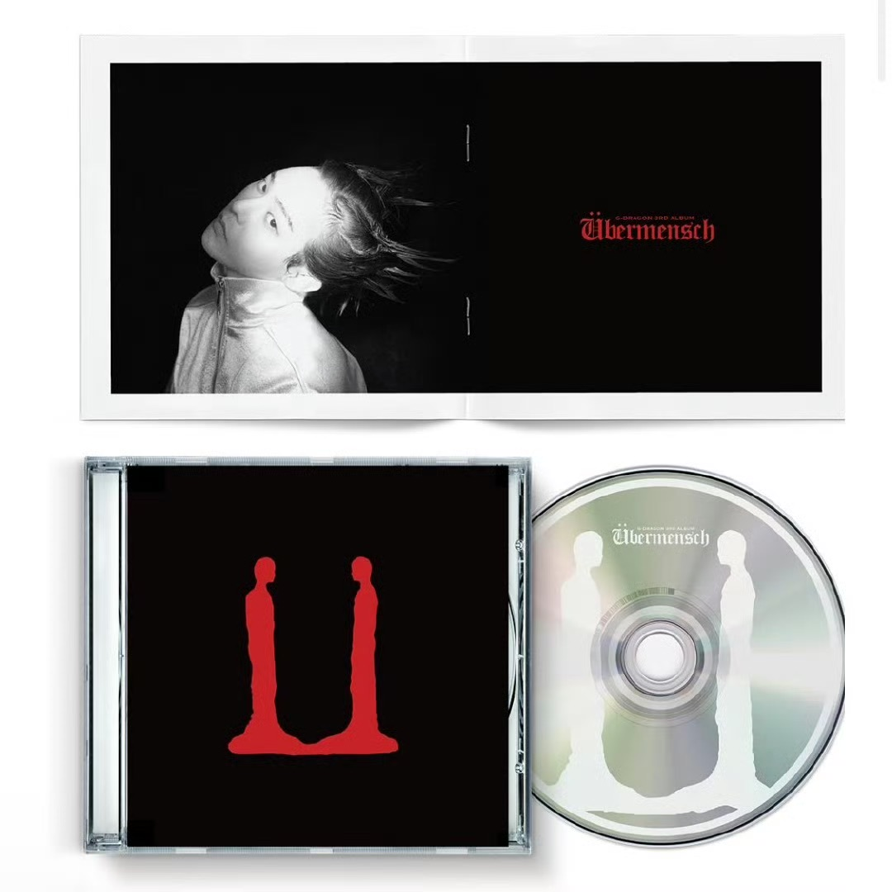

G-Dragon (Kwon Ji-yong) was born on August 18, 1988 in Seoul, South Korea.
One of South Korea's most influential musicians, songwriters, producers, fashion icons and entrepreneurs.
He is the leader, main rapper and core songwriter of the top Korean boy band BIGBANG, and is known as the “Revolutionary of K-Pop”.
He is known for his unique music style, avant-garde fashion sense and stage presence, and is good at fusing hip-hop, electronic and rock elements to break the traditional idol framework.
PERFORMANCE EXPERIENCE
G-Dragon's stage is known for its boldness, innovation, and infectious energy:
Group Activity:
BIGBANG global tours (e.g. MADE TOUR, ALIVE TOUR) have set box office records and mobilized tens of thousands of people for a single show.
Solo Tour:
2013 “ONE OF A KIND” and 2017 “ACT III, M.O.T.T.E” World Tour, covering Asia, North America and Australia, showcasing individual artistic concepts.
Iconic Stage:
2013 MAMA awards performance “Crooked”, with “tear-stained makeup” and emotional outburst performance to seal the deal.
2015 MAMA with CL, 'The Baddest Female' + 'Good Boy', which brought the house down.
2024 MAMA led Bigbang members to repeat the classic, triggering the whole audience to resonate, contributing another classic stage!

NEW ALBUM - ［Übermensch］
［Übermensch］ is G-DRAGON's third album, which means ‘Beyond-Man’ in English. G-DRAGON stands in front of us with a stronger and tougher image than ever before.
G-DRAGON injects artistry into ［Übermensch］, an album that stays truer to the essence of music than ever before. G-DRAGON has been involved in all aspects of the production, from the detailed arrangement of each track to the overall concept of the album. In addition, American singer-songwriter/drummer Anderson Paak and world-class guitarist Nile Rodgers have joined G-DRAGON's creative team to bring new ideas to his work.
The album contains 8 songs, including the lead single “POWER” and “HOMESWEET HOME” and the title track “TOO BAD” and “DRAMA”. Both the title track and the album's title track are different from the previous G-DRAGON's exclusive charm.

［Übermensch］ I

［Übermensch］ II

［Übermensch］ III

［Übermensch］ IV
NEW RECORD
The new album's title track "TOO BAD" has reaped the following results in one month:
1️⃣Melon's highest first hour and first day listening for unlimited male and female solo groups in 2025 as of today.
2️⃣Melon daily crowns x 28 became the second highest daily crowns in 2025.
3️⃣Meanwhile Melon likes surpassed 10w is the only new song in 2025 to surpass 10w.
4️⃣PAK count x 222, well on its way to 13th all-time PAK count.
5️⃣MelonHOT100 breaks the chart as of 3.22 has broken 400 times.
6️⃣Total 21 weekly crowns on major charts including circle and melon.
7️⃣Total of nine one-place finishes on the three major hit platforms and the MCD championship show.
PROFILE
The New York Times:
“G-Dragon is the 'disruptor' of Asian pop culture, breaking the formulaic framework of K-Pop and fusing music, art and fashion into a cultural phenomenon.”
Rolling Stone:
“He is the 'creative core' of the Korean music industry, where every track is like an experiment, from the childlike hip-hop of 'Crayon' to the lyrical introspection of 'Untitled', his music can never be defined.”
Forbes:
“As an 'iconic entrepreneur,' he not only sets musical trends, but also proves his business value through brand co-branding and art projects.”